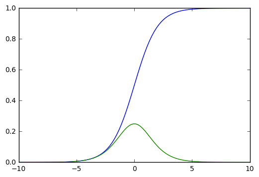

Difference Target Propagationの解説と考察
Difference Target Propagation(arXiv) 読んだ.
Bengio研究室のLeeさんによる論文.
2014年にarXivで初投稿されてる(若干行き詰まり感ある)
こちらの日本語解説pdfがとても参考になりました.
20150826_suzuki.pdf
僕の解説よりわかりやすいと思います.
tl;dr
誤差逆伝播法(Back Propagation)は生物学的妥当性が弱い.
そこである程度妥当性を補うTarget Propagtionという方法を提案.という論文.
Back Propagation
ニューラルネットワークi層のパラメータ\(\theta_i = \{{\textbf W}_i, {\textbf b}_i\}\)(重みWとバイアスb)を更新するためには
これが勾配降下法の基本形である.
誤差関数\({\partial L}\)を出力層\({\textbf H}_M\)から順に連鎖律を用いて勾配を求めていく.
勾配消失問題
もはやReLUにDropOutやBatchNormalizationのおかげで大丈夫だけど
Back Propagationは勾配が消失してしまう現象があり学習がうまく行かない
それは活性化関数にシグモイドなどを使うから起こってしまう.
シグモイド関数は有界[0, 1]のなめらかな活性化関数.

青線がシグモイド関数のプロットであり緑線がシグモイドを微分したプロット.
値は小数点以下であるし、飽和領域(端のほう)はほぼ0に近い.
そのためヤコビアンを線形に乗算していくBack Propagationでは
出力層から離れた層の更新能力が著しく低下する
Target Propagation
Back Propagationのような線形にヤコビアンを乗算していくやり方は
生物学的観点からみると妥当性がない.
(でもまぁ脳の場所によるやろ...って気もするけど...)
各層にターゲットという概念を取り入れて,
ヤコビアンの代わりにApproximate Inverse(近似逆)を用いた学習を行う.
定式化
ニューラルネットを定式化する.
入力を\({\textbf x}\),出力を\({\textbf y}\),
層数を\(i=0,...,M\)とし各層を\({\textbf h}_i\)と置く.
\({\textbf h}_0={\textbf x}\),
\({\textbf h}_M={\textbf y}\)である.
各層の活性化関数\(s_i\)と
パラメータ\(\theta_i = \{{\textbf W}_i, {\textbf b}_i\}\)より
入力層除く各層は以下のように定式化できる.
この時\(i\)から\(j\)までのパラメータを\(\theta^{i,j}_{\textbf W} = \{{\textbf W}_k, k=i+1,...,j\}\)とすると,
\({\textbf h}_j\)は\({\textbf h}_i\)についての関数で表すことができる.
訓練事例が\(({\textbf x},{\textbf y})\)の時,誤差関数
\(L({\textbf h}_M({\textbf x};\theta^{0, M}_{\textbf W}), {\textbf y})\)
は全体誤差となる.
i層に着目すると,全体誤差は次のように記述できる.
ターゲット
Target Propagationでは,全体誤差が小さくなるような
各層\({\textbf h}_i({\textbf x}; \theta^{0, i}_{\textbf W})\)の
ターゲット\({\hat {\textbf h}}_i\)を導入する.
ターゲットとの二乗誤差を設定する.
この二乗誤差で各層のパラメータを更新する.
ここで\(\alpha_i\)は学習率であり,\({\hat {\textbf h}}_i\)は定数とする.
そのため勾配の計算は一つの層の分のみになり,勾配消失問題を回避できる.
approximate inverse
出力層\({\textbf h}_M\)のターゲットは,教師あり学習ならばラベルの\({\textbf y}\)であるし,
オートエンコーダなどの教師なし学習ならば入力自身の\({\textbf x}\)となる.
では中間層のターゲットをどう決定するか.
Comments !